南京大学 Cal-OPD：先校准教师自身偏移，再蒸馏师生差异
论文：Calibrating Teacher–Student Discrepancy for On-Policy Distillation
作者：Qiangqiang He、Jin Li、MingCai Chen
机构：第一作者来自南京大学；合作机构为东南大学、南京邮电大学。
发布时间：2026-09-18，arXiv v1，预印本。精读日期：2026-09-22。
来源：arXiv 论文入口。代码状态：未核验独立代码入口。本文依据原文主文及全部附录，区分作者观测、方法假设与延伸理解。
教师与学生的差异并不纯粹反映能力差距，还混有教师自身的偏移；标准在策略蒸馏会不加区分地学习这些成分，而特权信息可能进一步放大教师侧偏移。
1. 背景和问题
在策略蒸馏让学生先按自己的当前策略生成推理，再请教师评价这些已经出现的词元。相较直接模仿一批固定教师答案，它让训练轨迹跟随学生分布变化；相较只看最终答案正确与否的强化学习，它能够沿推理链提供更密集的监督。但这种密集监督隐含着一个强假设：教师对当前词元赋予的概率，是足够稳定、值得学生逼近的参照。如果教师仅仅看到一句“请认真思考”就显著调整对同一个词元的概率，那么教师与学生之间的数值差异至少部分取决于教师上下文，而不完全是学生缺少推理能力。
论文把这一现象称为教师自偏移，缩写为 TSD。这里“自”并不是参数在训练中漂移，也不是教师随机生成不同答案，而是固定问题、学生前缀和待评分词元，仅改变教师额外看到的上下文，观测该词元的对数似然变化。这个控制变量设置十分重要：如果连学生轨迹也改了，就无法区分偏移来自上下文干预还是来自不同推理内容。教师保持冻结，学生轨迹只是测量载体。教师在原上下文中的概率也不被当成绝对真理，论文关心的是它在一组有限探针下到底能晃动多少。
1.1 不提供答案，也会改变教师评分
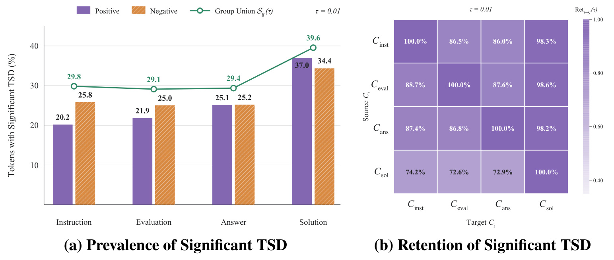
Figure 2 左图比较四种干预：不包含任务知识的通用指令、对当前解答的正负评价、正确或错误最终答案、正确或无关完整解答。阈值固定为对数似然变化绝对值大于零点零一，颜色柱分别对应正负探针，折线对应二者受影响位置的并集。通用指令已影响约百分之二十九点八的词元，评价和答案探针分别约为百分之二十九点一与二十九点四，完整解答才扩展到百分之三十九点六。因而“只有额外答案知识才会制造偏移”不符合观测。右图进一步比较各组受影响位置的包含关系：弱探针识别的位置，在完整解答探针下约有百分之九十八仍然显著，反方向却只有百分之七十三上下。这说明更丰富的信息很大程度上是在既有敏感位置之外扩张影响范围，而非创造完全不同的一批位置。
这组诊断使用 Qwen3-1.7B 的学生轨迹和 Qwen3-8B 教师，来自六千五百二十八个问题、约六千万响应词元；它与后面两组正式训练模型配对不是同一个实验，不能把诊断规模直接说成训练样本数。受影响比例同样依赖阈值，论文附录跨阈值、跨教师复核了方向，但数值并非一个天然常数。从研究设计看，图中最有说服力的是“无知识干预也出现大量变化”和集合保留的不对称，而不是某个单独百分比。它支持先测量参照稳定性，却尚未证明所有被测得的变化都应该从知识迁移中删除；后一判断需要真正的训练消融。
左图的并集比例还高于单独正向或负向探针比例，说明两种极性并未完全覆盖相同位置；因此估计区间使用正负两侧，不能只保留一个方向的提示再声称已测完教师敏感区域。
1.2 相反的语义，不一定产生相反的偏移
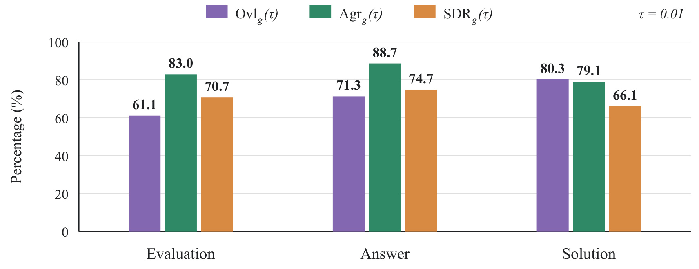
Figure 3 进一步检验偏移是否跟所提供信息的正确性一致。三个颜色依次给出显著位置集合的交并比、共同显著位置上的方向一致率、成对偏移中共享分量占比。答案级正负干预只替换正确或错误答案，仍有百分之八十八点七的方向一致率，共享偏移比例为百分之七十四点七。也就是说，对一个固定词元，正确提示和错误提示常常使教师概率朝同一个方向移动。如果把这种移动直接解释成新增的数学知识，就很难说明为什么改变答案正确性后仍如此同向。评价级也有较高方向一致率，完整解答级则有最高的位置重合率，却有较低的共享比例，提示更长、更丰富的上下文会增加语义差异所贡献的部分。
这里应保持因果措辞的克制。相反提示下存在共享移动，能够反驳“教师概率移动总是可靠知识”的简单命题，却不能严格把每一个共同分量标成无用噪声。正确与错误答案都可能改变教师对任务类型、叙述风格或学生状态的判断；这些变化之中仍可能夹带可迁移信息。论文后来发现完整解答探针过滤过强、下游性能反而下降，正是这一边界的实证提醒。对本文最准确的理解是：用可观测的上下文敏感性作为校准启发，而不是已经找到了能力信号与噪声的真实、唯一分解。图中三个统计量回答的也不同：位置重合看“在哪里”，方向一致看“朝哪边”，共享比例看“幅度中有多少同向公共部分”，三者不能混用。
完整解答组的位置交并比为百分之八十点三，共享幅度比例却只有六十六点一。覆盖范围重合与幅度同向成分并非同一件事，这组数值恰好说明不能仅凭位置高度重合便断定两次干预没有语义差异。
1.3 表面形式比数学符号更敏感
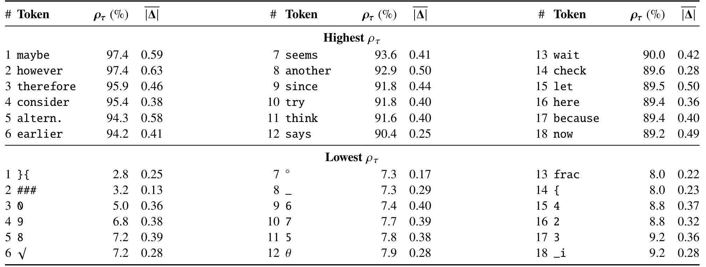
Table 2 在完整解答正向探针下，把分词器中对应同一表面词型的变体合并，只保留出现超过两万次的词型，再按每次出现时发生显著偏移的条件概率排序。高位多是“也许”“然而”“因此”“考虑”等组织、转折、犹豫和检验推理的自然语言标记，最低一组则主要是数字、分数、根号与数学记号。高位十八个词型都超过百分之八十九，低位组均低于百分之九点三，差距接近一个数量级。采用条件概率而非原始出现次数，是为了避免高频连接词仅因出现得多就被误认为更敏感；表中的平均幅度又只统计显著出现，不能与所有出现的平均偏移直接比较。
这一表格让“教师自偏移”从抽象概率现象落到可理解的推理文本结构：教师常会重新调整如何讲述推理，却未必同等程度改变数字和算式。它也解释了为什么盲目匹配教师分布可能带来更长、更多自我讨论的回答。不过不能据此预先写死一个停用词表，因为“因此”“检查”有时承担真实逻辑连接，同一个词型在不同位置也可以有不同作用。Cal-OPD 在每个出现位置上测量概率区间，而不是全局屏蔽某些词。附录把词型排名扩展到其他干预，整体分离仍在，弱探针的幅度更小；这些结果更适合支持按上下文校准，而非支持把自然语言推理标记一律删掉。以上三组诊断共同构成方法动机，真正能否改善能力还必须由后续受控训练回答。
表中排序依据未舍入的条件概率，显示值相同不代表严格并列。例如最前两种词型都显示九十七点四，仍可能有细小差别；该排序是诊断统计，不能据显示精度构造新的词级过滤阈值。
2. 方法
2.1 固定学生轨迹，建立原始蒸馏优势
论文先从标准 OPD 出发。给定问题，学生生成一条完整响应；教师不另造一条轨迹，而是在相同前缀上给学生实际选中的词元评分。训练依赖学生当前分布，因此每一轮轨迹与用于计分的策略版本需要配套。以下把响应长度记为大写的长度变量，把教师上标与长度区分开。
符号解释：问题为 $x$，已生成前缀为 $y_{<t}$，当前位置词元为 $y_t$，教师与学生策略分别是 $\pi_T$ 和 $\pi_S$。正优势意味着教师比学生更支持这个已采样词元，训练会提高它的概率；负优势则相反。这是在采样轨迹上的对数概率差，而不是对整个词表直接做一次欧氏距离，也不是最终答案的二值奖励。
符号解释：这里 $D$ 是问题集合，$T$ 是当前响应长度，$\operatorname{sg}$ 表示优势在这一目标中停止梯度。它阻止把计算优势的路径当作另一个需要追踪的可微目标。Cal-OPD 不另换学生生成方式或模型架构，而是在此目标的优势位置替换监督信号。实现时仍要遵守原来的批次归一化、损失聚合及裁剪设置；只实现论文的几行区间运算，却换掉其余训练配方，会让结果无法与表中基线直接比较。
2.2 正负上下文探测不对称自偏移区间
教师额外接收干预上下文，但问题与学生前缀保持原样。通用指令一对分别要求认真核验和快速作答；评价一对分别宣称解答正确严谨或错误不可靠；答案一对插入正确或错误最终答案；解答一对插入正确或无关完整推导。默认训练选评价级，因为它不直接给出题目的具体答案，同时又比泛化指令更有效。正负评价是用于测量的对照提示，并不意味着系统已真实获得一个能判断每条学生轨迹正误的金标准评审结论。
符号解释：$c$ 只进入教师上下文。这个差值把同一个词元在干预前后的教师对数似然相减，故学生能力和所走轨迹在该次比较中没有改变。虽然教师冻结，教师分布仍因条件上下文不同而发生变化，这就是全文“自偏移”的具体可计算定义。
符号解释：两项分别取测得的最大向下和向上幅度，天然非负。若两个探针都使概率上升，下界不扩张而上界扩张；若一升一降，两侧都扩张。因此它是以未干预教师为基准的不对称区间，并非正负幅度平均之后的一个对称误差条，也不是先把正负提示相互抵消。
符号解释：$\lambda$ 是松弛因子，用来补偿只看两个探针无法覆盖所有上下文变动的局限，默认取五。它不是带统计覆盖保证的置信系数：论文没有证明真实能力参照一定落在这个区间中，也没有证明区间内差异均不可迁移。因子越大，估计区域越宽、被压掉的优势越多。探针和因子共同决定有效校准强度，不能脱离干预语义单独选取。因为区间在对数似然空间定义，其数值尺度与概率空间的等长区间不相同；实现时不能先转概率再应用相同边界公式。
2.3 只学习落在区间外的残差
Cal-OPD 把“追上教师的单个概率点”改成“先进入教师自身可变动区域”，只保留学生到最近边界的有符号距离。
符号解释：当学生对数似然低于下界，得到正优势并向下界靠近；高于上界时为负优势并向上界靠近；落在区间中则为零。由于区间总包含原教师点，校准通常减小原优势的绝对幅度，且不会把指向教师的方向翻转。这是一种逐词元、随上下文变化的软缩减：区间外词元仍然训练，但只训练超出区间的部分。它不同于把高偏移词元完全移出损失，也不同于把所有优势统一乘一个衰减常数。
符号解释：$A_t^{\mathrm{TSD}}$ 是按该估计区间解释掉的差异，不是直接观测到的真实噪声标签。该分解在代数上成立，语义上能否分离无用变化仍取决于探针。这一点尤其关系到完整解答干预的失败：区间变宽之后，一些有用能力差异也可能被归入被解释部分。
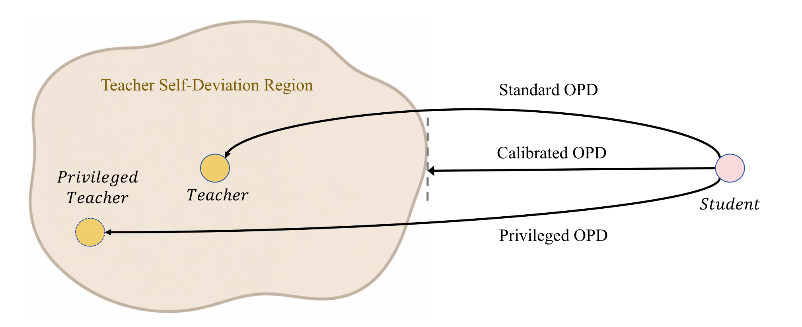
Figure 1 把几种训练方向画成几何示意。标准 OPD 从学生指向原教师点；特权 OPD 直接指向提供额外信息后的教师点，它可能离学生更远，同时也落在教师自身变化区域中；Cal-OPD 则只把学生推向靠近它的一侧区域边缘。图中阴影是概念性区域，实际实现是每个词元独立的对数似然区间，不能把它理解成论文显式估计了整个模型参数空间中的流形。图示表达的是监督参照从点变成有宽度的集合，而不是换一个更弱教师。强教师仍是唯一基础参照，新增两次评分是为了知道它对当前词元的判断有多敏感。
训练时需要未干预、正向、负向共三份教师评分；学生仍只看题目和自己的历史，额外上下文不会成为部署输入。推理阶段保留训练后的学生，既不需要教师也不需要这些探针，因此新增成本集中在训练侧。原目标只需把优势替换成校准优势，但工程上必须确保三份评分与同一条学生轨迹逐词元对齐，尤其要避免额外提示长度改变掩码后将位置错配。一个简单数值例子是教师对数似然为负二，区间为负二点四到负一点八，学生为负三时，原优势为一而校准优势为零点六；学生为负二点二时原优势仍为正，但校准后为零。这说明保留的是区间外距离，而非挑一半词元随意训练。例子仅解释公式，不是论文报告的实验数据。
符号解释：最后两项是理解实验必须分开的监控量：$r_k$ 为第 $k$ 步绝对优势总量的保留比例，$z_k$ 为零优势词元比例。论文摘要的百分之五十二到六十五对应前者；它绝不等于只保留该比例的词元。区间外的非零优势也会被缩短，因此信号总量减少可以明显大于词元数量减少。分母很小或为零时的数值保护属于复现需检查的实现细节，原文没有把它写成单独算法贡献。
3. 实验结果
3.1 六个数学基准与两组师生规模
训练数据来自经过大模型筛选的 DAPO-17K，正式训练统一进行一百步、每步二百五十六条轨迹。实现使用 verl，八张 NVIDIA H20 中学生与教师各占四张。学习率为百万分之一，AdamW、权重衰减零点零一、无预热、余弦调度，梯度裁剪阈值为一。训练最大响应一万六千三百八十四词元，温度一点零；评测最大响应两万零四百八十词元，温度零点六、核采样阈值零点九五。评测指标 Avg@16 是每个问题独立采样十六个响应后平均二值正确性，再对评测集聚合，不能解读成十六次中至少一次做对的通过率。
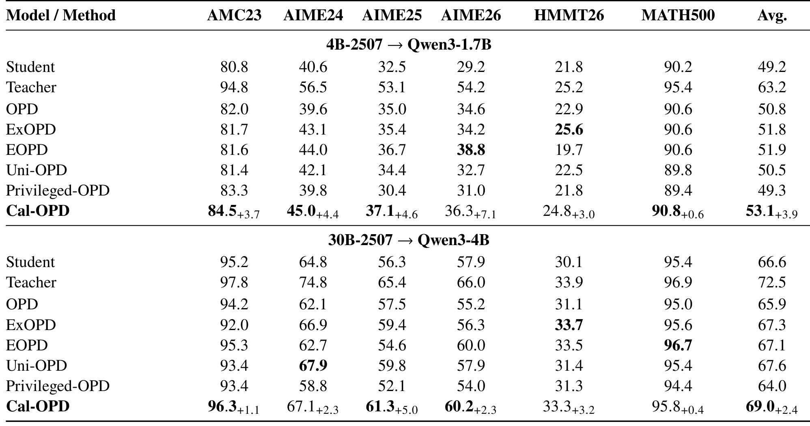
Table 3 的第一组是 Qwen3-4B-Thinking-2507 蒸馏到 Qwen3-1.7B，学生起点平均四十九点二，标准 OPD 五十点八，Cal-OPD 五十三点一；第二组是 Qwen3-30B-A3B-Thinking-2507 蒸馏到 Qwen3-4B，学生起点六十六点六，标准 OPD 六十五点九，Cal-OPD 六十九点零。因此相对标准 OPD 的改进为二点三和三点一个百分点，相对原学生为三点九和二点四个百分点。第二组很有辨识度：教师更强并不保证直接模仿其全部差异会提升学生，未经校准的训练甚至比初始学生略差。比较其他基线时，Cal-OPD 在两组平均值都最高，第一组最近的 EOPD 为五十一点九，第二组最近的 Uni-OPD 为六十七点六，说明它并非只战胜一个最简单实现。
但不能把平均领先写成逐项统治。第一组 AIME26 的 EOPD 三十八点八高于 Cal-OPD 三十六点三，HMMT26 的 ExOPD 二十五点六也高于二十四点八；第二组 AIME24 的 Uni-OPD 六十七点九高于六十七点一，HMMT26 的 ExOPD 三十三点七高于三十三点三，MATH500 的 EOPD 九十六点七高于九十五点八。原文统计十二个配对任务里七个最优，与这些例外相容。直接蒸馏完整参考解答条件下的教师则得到四十九点三和六十四点零，尤其第二组比初始学生低二点六个百分点。这支持特权信息可能引入副作用，但没有证明所有特权蒸馏配方都失败；比较限于本文模型、数据与实现。表中也未提供这些差异的多随机种子置信区间，较小的单项差距不应被描述为已确认的统计显著优势。
基线的训练细节并非绝对一致：Uni-OPD 每题十六条轨迹、每步十六题，保持总轨迹数二百五十六；ExOPD 通过 LoRA 切换基座与策略，部分方法关闭单词元损失截断；特权 OPD 为容纳参考解答放大提示长度。公平性应理解为相同总体训练预算下尽量采用各自配方，而非每个算子和上下文长度完全相同。复现必须同时对齐这些设置，否则无法排除优势来自批次结构、聚合规则或截断差异。
3.2 干预粒度和松弛强度存在最佳区间
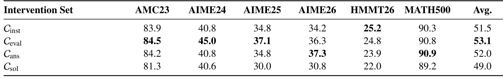
Table 4 固定松弛因子为五，只改变估计区间的干预集合。通用指令平均五十一点五，评价探针五十三点一，答案探针五十二点零，完整解答探针四十九点零。结果不是“额外知识越多越好”，也不是“区间越宽越能过滤坏信号”。评价探针比不含任务针对性的指令更能暴露上下文敏感性，又没有完整解答那样强烈地吸收可迁移的任务信息，因此在这个配置中平衡最好。完整解答甚至低于学生初始四十九点二，给出了方法自身的重要负结果：校准机制同样会因探针过强而损坏监督，而非只要冠以校准就稳健改善。
逐项也有差异。答案干预的 AIME26 三十七点三高于评价干预三十六点三，MATH500 九十点九略高于九十点八；通用指令的 HMMT26 二十五点二高于评价干预二十四点八。因此默认评价探针是平均表现最佳选择，不是每个数据集的唯一最优。完整解答干预会改变不同任务信息进入教师上下文的方式，不能把四组平均值解释成纯粹的提示词长度效应。若要进一步拆解，应该在相同长度、相同格式但不同信息量下做控制，或测量区间宽度与真正错误步骤之间的相关性。论文目前提供的是四类探针的效果比较与动态证据，尚未证明它们覆盖了所有合理提示设计。实践中应首先监控是否出现大范围零优势与性能下降，再决定探针强度，而不是把五这个超参数当成跨模型恒定设置。
这张表只覆盖四B教师到一点七B学生的配对，不能把评价探针的排名直接推广到三十B教师。所有干预共享松弛因子，探针强度与区间扩张的耦合仍在，换教师时应重新核验这种经验平衡。
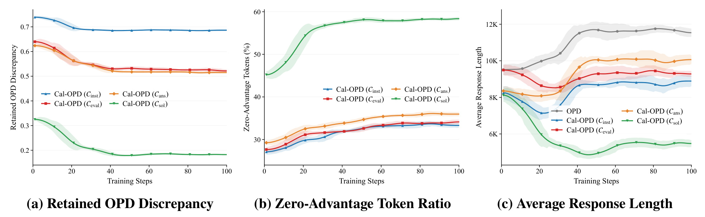
Figure 4 将三种容易混淆的变化放在一起。评价级校准的优势总量保留比例从约百分之六十五下降到百分之五十二，零优势词元比例则从约百分之二十七升至百分之三十四；这两条曲线数值不同，恰好说明“去掉多少信号”与“完全不更新多少词元”并不相等。标准 OPD 响应长度从约九千八百扩张到一万一千八百，评价级校准先下降到约八千五百，结束约九千三百。因而它在提高主结果的同时抑制了该配置下无效的长度扩张。这里不能把更短本身定义为更好，正确率保持乃至提高才让长度下降成为有意义的效率证据。
完整解答校准的保留比例只剩约百分之二十，零优势比例接近百分之六十，回答长度下降最明显，却在前表表现最差。这一对照排除了“短推理天然更高质量”的解释，也揭示过度过滤会让训练失去足够的教师指导。通用指令保留接近百分之七十，长度又较接近标准 OPD，说明探针太弱也难以改变训练路径。三幅曲线应联合看：有效校准是在学习强度、有效覆盖与输出行为之间达到一种经验平衡。曲线中的保留比例随训练变化，因为学生似然及轨迹分布不断变化，不是预设固定屏蔽率；因此随机每步删掉固定百分比词元不构成同一算法。图上阴影显示动态波动，但不能替代下游评测的独立多种子置信分析。
横轴是固定一百步训练进度，长度曲线报告生成响应的平均词元数，并非推理服务延迟。不同干预增加的教师前向相同而轨迹长度不同，只有结合实际墙钟表才能判断总训练效率，不能由曲线变短直接计算加速比。
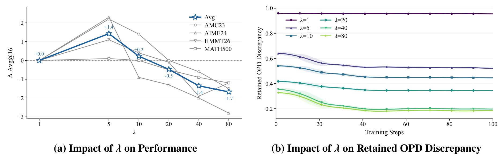
Figure 5 左侧展示相对基准的性能变化，右侧展示不同松弛因子下的优势保留曲线。因子从一增到五带来最佳表现，继续增大到十、二十、四十、八十则逐步退化；右图同步表明区间越宽、保留信号越少。左图的纵轴是相对变化，展示的基准集合和绝对主表并不完全相同，因此不能把图中的加一点四直接替换为主表相对标准 OPD 的加二点三。该图用于确定超参数的非单调趋势，而完整主表用于报告正式六基准平均效果，两者要各守口径。
有限两次探针本来只覆盖教师可能变化的一小部分，所以适度放大测得边界有合理性；但放大也没有统计校准保证，过宽必然侵入原本应学习的差异。图中因子为一时几乎保留全部信号，说明如果区间太窄，算法形式虽然存在，训练行为也可能接近标准 OPD。大因子区间下，非零残差变小并且更多词元落入死区，造成监督不足。这个结果与完整解答探针的退化互相呼应：探针语义和松弛幅度是两条都能造成过过滤的路径。复现时应报告一段性能较稳定的范围、信号保留量及零优势比例，而不是只公布一次最佳值；如果换教师后必须大幅调因子，也应把调参预算计入成本。原文选择五是所测条件下的经验默认，不是一个由理论导出的普适常数。尤其需要避免把右图的单调下降视为优化目标：若只优化更低的保留比例，极端扩大区间就能轻易达到，却会使绝大多数学习信号消失；左图的非单调质量曲线才是约束这一行为的依据。
3.3 分布覆盖和两类失败模式
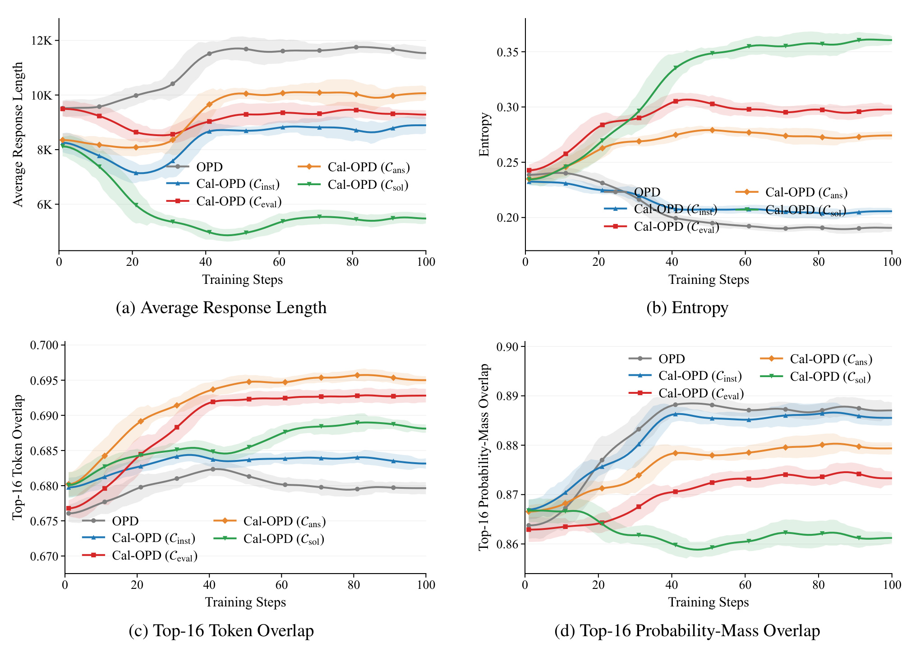
Figure 9 比主文增加了三个分布层面的视角。评价级 Cal-OPD 的学生熵高于标准 OPD，教师前十六词元集合与学生集合的重合更高，但对应概率质量重合反而较低。这并不矛盾：学生可以覆盖更多教师认为合理的词元，同时不完全复制教师对这些词元的概率集中程度。原文中评价级集合重合接近零点六九三，标准 OPD 和通用指令约零点六八四；标准 OPD 的概率质量重合却更高。作者据此认为校准避免过拟合某一种优势叙述模式，并保留较宽的学生分布。这里的“多种推理模式”属于对分布指标的机制解释，图中没有直接标注每条推理的语义模式，因此仍需专门的轨迹聚类或多样性质量评估补强。
完整解答校准的熵达到约零点三六，同时概率质量重合约零点八六二，甚至低于起点，且回应缩短至约五千五百词元，说明高熵也并不天然代表良好的探索。它可能只是因有用教师信号被滤掉，学生未能跟随目标分布。通用指令校准则在熵下降、质量重合与长度扩张上接近 OPD，表明它估计的区间不足以明显改变行为。因而本文提供的诊断不是“提高熵”这条单目标策略，而是联看性能、长度、覆盖与概率分配。集合重合与概率质量重合都相对于未加特权的教师计算，这个参照选择让不同方法能够在共同目标下比较；若换成各自条件教师，表面上的高重合可能只是更好地模仿了不同对象，失去横向解释力。
四个面板的纵轴范围分别设置，尤其集合重合只在较窄区间内变化，视觉上的大幅分离不等于同等幅度的能力提升。应按标注数值读差异，再与六基准正确率对照，避免将局部放大的分布变化当成巨大的质量增益。
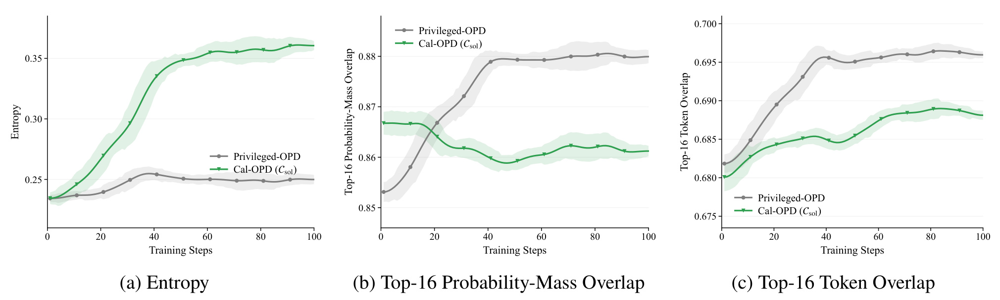
Figure 10 专门比较两个都变短、且下游退化的方法。直接特权 OPD 的熵保持较低并趋于稳定，概率质量重合逐步升至约零点八八零；完整解答级 Cal-OPD 的熵则显著升高，概率质量重合下降到约零点八五九附近。作者把前者归因于过度自信的捷径塌缩，把后者归因于监督信号塌缩。两个机制在输出长度上可能看起来相似，但概率行为相反，因此只用平均长度监控训练会漏掉根本差别。该图也防止一种误读：本文并非建议任何短回答都优于长思考，而是希望在有效的教师指导下保留足够能力并避免不必要的叙述膨胀。
进一步看词集合重合，直接特权蒸馏的集合覆盖也可以上升，这并不能抵消概率分配过度集中或数学正确率下降。分布对齐和任务能力之间没有一一对应关系，应该把它们当作解释指标而非上线准入指标。对过强校准，更高熵加更低质量重合说明学生脱离了教师参照；对直接特权蒸馏，较低熵加上升重合则说明它可能过度追随某些条件化模式。作者给出的是符合这些曲线的解释，并没有对每个错误案例证明唯一成因。若进一步研究，应对同题轨迹进行步骤正确性标注，检查是提前给答案、丢失必要推理，还是仅换了表达形式；这比凭熵曲线给所有失败统一贴“塌缩”标签更能区分真正可改进环节。
这组对照共享未加特权教师作为参照，因此一方直接学习条件教师时，即便目标训练损失改善，也不保证对共同参照的分布关系或下游能力同步改善。图反映训练路径不同，不能拿两条熵曲线单独选择部署检查点。
3.4 额外教师计算不总被短轨迹抵消
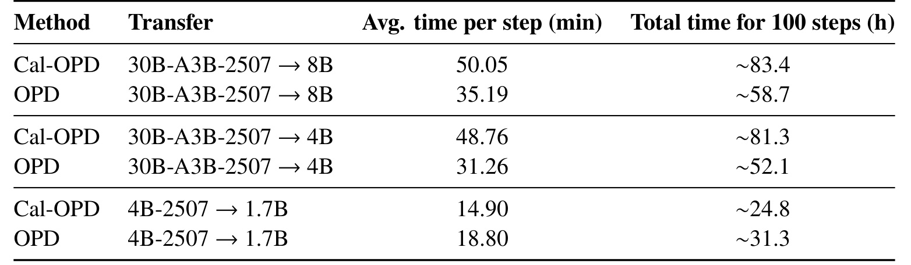
Table 12 是必须和主文效率结论一起阅读的成本约束。小教师配对中，Cal-OPD 每步十四点九零分钟、OPD 十八点八零分钟，一百步总时间约二十四点八和三十一点三小时，前者约快一点二六倍。这个收益来自轨迹变短抵消了新增教师评分，绝不是区间计算本身能减少教师调用。换成三十B混合专家教师到四B学生，校准每步四十八点七六分钟、基线三十一点二六分钟；到八B学生则是五十点零五与三十五点一九分钟。按表中数值计算，这两组分别增加约百分之五十六和百分之四十二的每步时间。因此“Cal-OPD 训练加速一点二六倍”只能限定于小教师配对，不可作为所有模型规模的结论。
这一成本表还说明，效率实验含八B学生配置，而主结果的完整六基准表只展示一点七B与四B学生，不能把八B耗时证据当成已报告的八B质量收益。每步时间同时受教师规模、学生轨迹长度、并行分配、分块前向和设备利用率影响；三次教师评分并不意味着墙钟恰好变三倍，因为学生生成、反向与其他计算也占时间。反过来，小配置更快也不能外推为推理服务加速：这里统计的是训练一百步的墙钟，部署侧没有独立吞吐或延迟基准。若以达到某个精度的总时间为目标，还应比较收敛曲线对应的最佳检查点，而非仅固定一百步。对资源紧张团队，是否采用要结合额外教师预算与质量收益计算，不能只看摘要中“保留更少信号”的表述。
原文明确每步新增两次教师前向用于正负探测，普通教师评分仍保留。额外开销发生在训练阶段；部署学生不需要再携带两个探针教师，这与训练变快或变慢是不同成本边界，应在预算中分别列出。
3.5 匹配保留量后，残差结构仍然重要
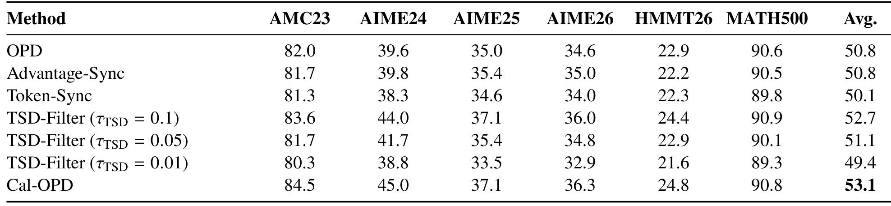
Table 13 为最重要的替代解释提供控制。幅度同步基线每步读取 Cal-OPD 的优势保留比例，把标准 OPD 所有词元优势整体乘同一比例，得到五十点八，与 OPD 相同。词元同步则按校准中零优势比例随机把相同数量的词元置零，平均降至五十点一。两者分别匹配总体强度与数量稀疏性，却未重现五十三点一的校准结果，说明收益不能仅用“梯度小一点”或“少训练一些词元”解释。第三组根据教师自偏移幅度做硬阈值过滤，阈值零点一得到五十二点七，距离 Cal-OPD 仅零点四；更激进的零点零五和零点零一分别降到五十一点一与四十九点四。这表明识别敏感位置本身已贡献不少收益，而软残差处理进一步保留了区间外有价值的差异。
匹配控制的力度也有边界。前两者逐步匹配全局比例，却没有匹配每个词元的具体位置和方向；硬阈值方法使用相同偏移来源，但不同阈值下并不意味着所有细粒度统计完全一样。因此该表较好地支持残差结构有作用，而非严格分离所有可能机制。尤其最强硬过滤仅差零点四，在缺乏多种子方差时，不应把这一小差异写成强统计结论。附录 Figure 11 还显示原始梯度范数远高于阈值一，前期约一百二十或六十五，后期仍约三十五或十五，说明标准训练本就强烈裁剪。全局缩小优势可能被归一化或裁剪部分抵消，而逐词元重分配会改变梯度方向。这让“信号总量减少多少”不等于“最终参数步长减少多少”，也解释了为何对照应在真实训练目标和裁剪机制下进行，不能仅比较未裁剪损失标量。
符号解释：上式是附录给出的全局梯度裁剪形式，$g$ 为裁剪前梯度、$C$ 为阈值。它保持方向而限制范数，Cal-OPD 则先在词元层面重新分配贡献，两者作用位置不同。这也提示后续复现应同时记录裁剪前范数、裁剪触发率、词元优势分布与效果，才能判断真正变化来自监督结构还是优化尺度。
4. 总结
Cal-OPD 的主要贡献，是把教师侧上下文不稳定性放进在策略蒸馏的监督设计。学生在自己的轨迹上学习这一点没有变，强教师没有变，变化的是对每个教师概率点的信任方式：先用正负干预测量一个有限区间，再将区间之外的师生距离交给学生。这个设计十分紧凑，却配有从无知识干预、正负语义一致、词型敏感性，到下游性能、训练动态和匹配控制的证据链。最值得保留的结果是两组数学推理平均成绩分别优于标准 OPD 二点三和三点一个百分点，而不是把摘要的信号比例当作性能增幅或词元减少比例。
四点局限决定结论的适用范围。 第一，两个提示只提供有限的经验探测，不是教师不确定性的完整分布，区间中的差异可能包含有用知识；完整解答探针的负结果已经证明过过滤并非理论上可排除。第二，主要效果集中于 Qwen3 家族与数学长推理，尚不能直接声称对代码、工具调用、开放问答或异构分词器师生配对都有效。第三，额外两次教师前向在大教师场景显著增加训练时间，固定步骤的质量提升不等于固定算力下仍有优势。第四，主表与最强控制之间缺乏充分多种子统计，个别任务和零点四个百分点这类小差距仍需方差验证；平均领先也不代表每项任务领先。
还应注意测量解释的限制。表面词型的高偏移不等于这些词元对推理没有作用，词集合覆盖增加也不直接证明生成了更多正确的语义策略。直接特权蒸馏失败与强校准失败呈现不同熵动态，但作者的机制命名仍属于由曲线支持的解释，并未穷尽错误原因。评价级探针看似不需要真实参考解答，却使用了有明确正负判断口吻的上下文；换语言、措辞、顺序或提示位置是否稳健，仍值得系统检验。公开预印本和完整 PDF 能支持当前读到的实验数字，但未核验到独立代码入口，不能把方法描述等同于一套已可直接运行的开源实现。
后续最有价值的三类验证可以沿现有证据缺口展开。首先，在相同训练墙钟或相同教师词元预算下比较 Cal-OPD、标准 OPD 与最强硬过滤，报告达到同一质量门槛的时间，而非只固定一百步；这样才能决定新增探针是否值得。其次，用多种不同措辞、不同信息强度的正负探针重复区间估计，分析所筛掉的词元是否稳定，并对相同长度的正确、错误及无关上下文做控制，检查所谓自偏移到底保留了多少任务信息。再次，把效应扩展到不同模型家族及代码等领域，用步骤级错误定位和语义多样性评估区分叙述变化与真正推理改善，同时报告多随机种子区间。
从复现顺序看，宜先重现小模型配对的主表、保留比例与零优势比例三者，再检查响应长度和训练耗时是否同向，最后才扩大教师。若成绩提高但区间几乎没有过滤，或长度急剧缩短而熵持续上升，就不应仅凭一个平均分宣布机制已经复现。本文给出的启发不是“教师差异越少学越好”，而是每一份密集监督都应先回答它反映什么、对上下文有多敏感，再决定学生该追随到何种精度。这一判断仍需通过下游效果和成本的共同检验，不能由概率诊断单独替代。